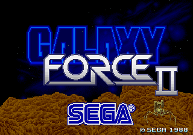
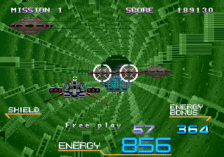
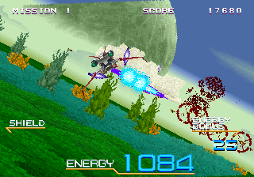
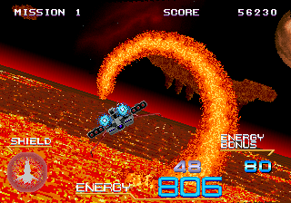
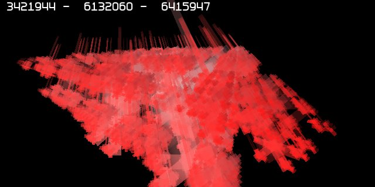
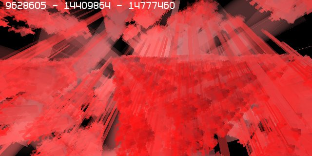
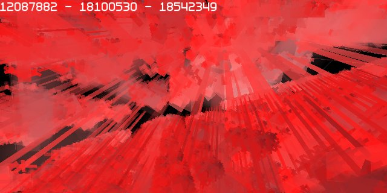
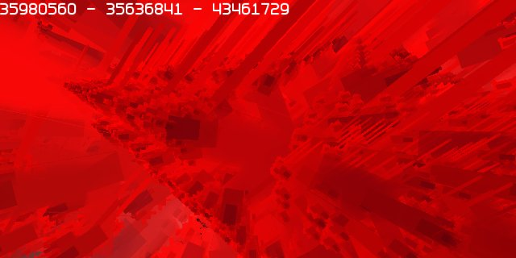
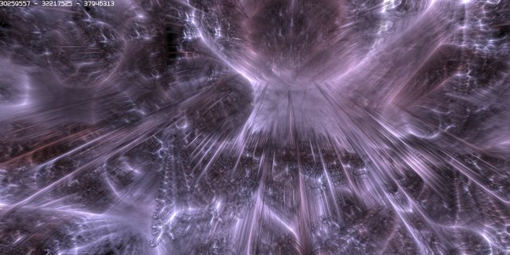

20070713 - Micro Imposters
Micro What?
Lets first take a trip back to a time before polygons, to the late 80s, to a video game that I just could not sink enough coins into,
Sega's
Galaxy Force II.
This video game used custom hardware (running at 12.5Mhz) that could draw a huge number of rotated and scaled billboards with on/off transparency.
It was state of the art in the 80s and produced stunning 3D graphics at the time.




However the reign of billboard or impostor based graphics came quickly to an end with the polygon based video games which hit arcades in the early 90s.
But what if these ideas had not died? Fast forward 20 years later.
Atom is built on a concept similar to the 3D graphics of the late 80s, except taken to the extreme with modern hardware.
Instead of a surface/vertex/polygon based pipeline, Atom has a solids based pipeline that uses micro impostors or lots and lots of billboards.
Lets strip the clothes off the Atom Graphics Engine and see what is underneath.
Taking a step back, viewing an example world from a distance, but rendering only with flat billboards (no cool graphics), the micro impostor structure shows through.

As you move more inside the world, the engine automatically expands and renders more detail, seamlessly subdividing into smaller and smaller micro impostors.

The world is fully solid and procedural, so you can just keep on going deeper inside anything.
Atom has a state of the art custom hidden surface removal algorithm which automatically expands and renders only the surfaces of the solid objects which you can see at any given time.

Even at the smallest level, which is a fraction of a pixel of the size of the previous image, Atom still is able to render a fully detailed image.

With the skin back on, Atom can render stunning graphics in real-time.
